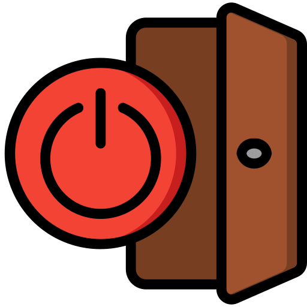

<ion-header>
  <ion-toolbar color="sucess">
    <ion-title class="ion-text-center">
      <div class="ion-text-center">
        Accueil
      </div>
    </ion-title>
    <ion-button (click)="destroyUser()" slot="end" color="none">
      
    </ion-button>
  </ion-toolbar>
</ion-header>
<ion-content>
  <div class="bg-img">
 <br>
        <div class="logo">&nbsp;</div>
    <ion-title class="ion-text-center ion-text-shadow">Faire une Déclaration</ion-title>
    <ion-card expand="block" class="add-button">
      <ion-button expand="block" (click)="goTo('lost')" class="color" color="#002239"> J'ai perdu un objet</ion-button>
    </ion-card>
    <ion-card expand="block" class="add-button">
      <ion-button expand="block" (click)="goTo('found')" class="color" color="#002239"> J'ai trouvé un objet</ion-button>
    </ion-card>
    <ion-title class="ion-text-center ion-text-shadow"> Accès aux listes d'objets</ion-title>
      
        <div class="containerDouble">
          <ion-button expand="block" class="color" routerLink="/lostlist" routerDirection="forward" color="#002239" >
            <ion-icon name="sad" class="ion-text-small"></ion-icon> Perdus
          </ion-button>
          <ion-button expand="block" class="color" routerLink="/foundlist" routerDirection="forward" color="#002239">
            <ion-icon name="happy"></ion-icon> Trouvés
          </ion-button>
        </div>
      

  </div>
</ion-content>